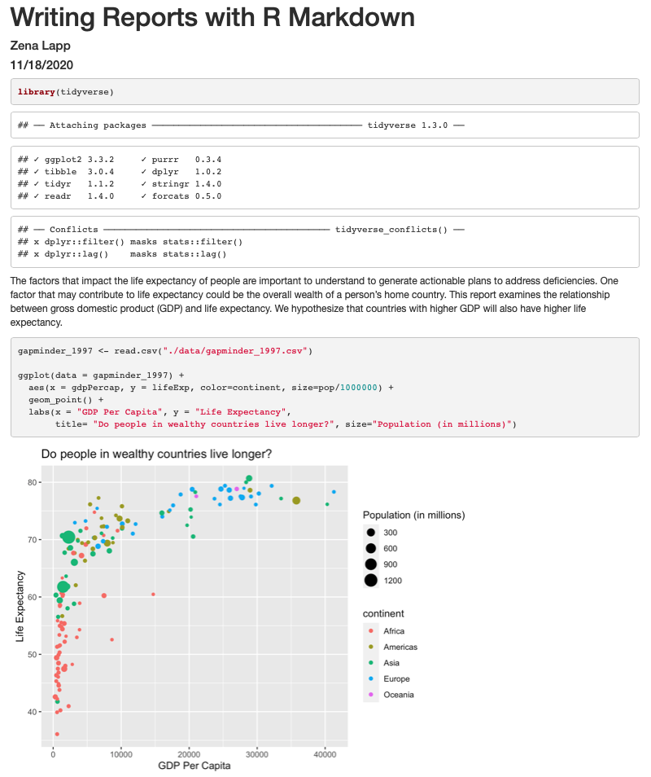
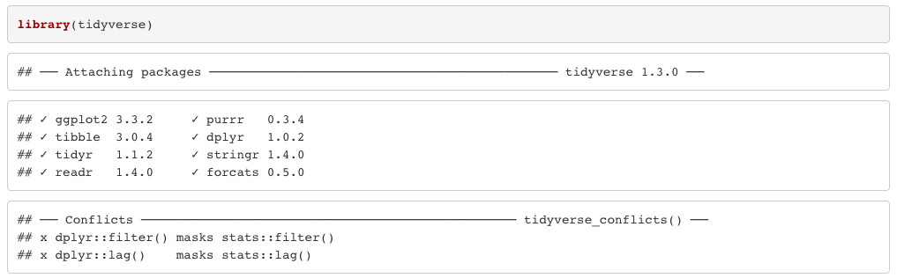
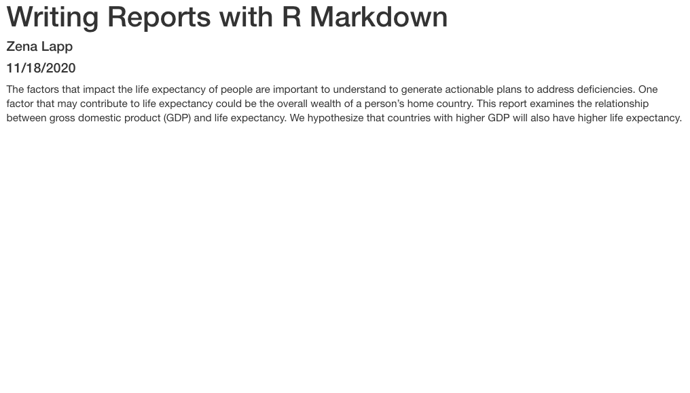
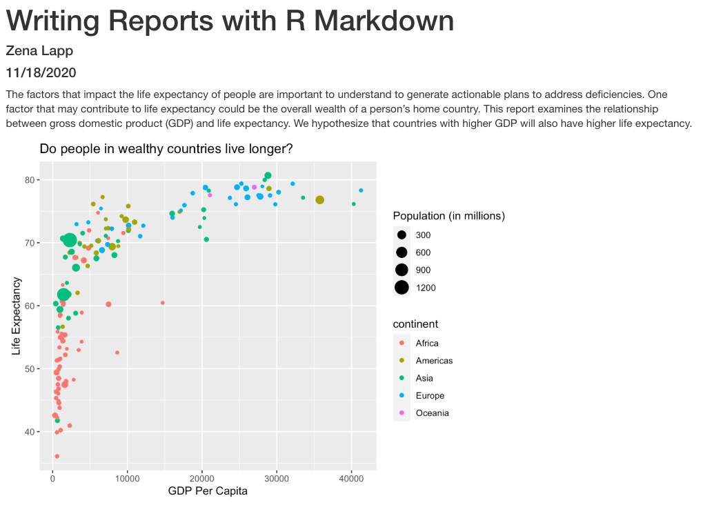
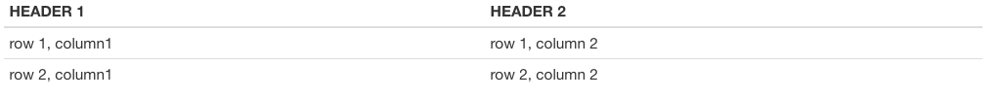
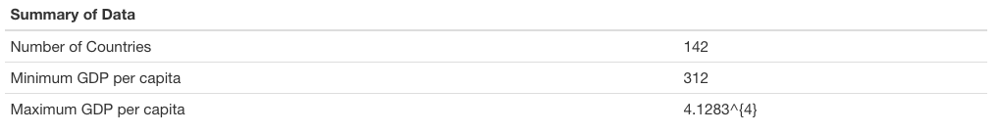

Writing Reports with R Markdown
Overview
Teaching: 105 min
Exercises: 30 minQuestions
How can I make reproducible reports using R Markdown?
How do I format text using Markdown?
Objectives
To create a report in R Markdown that combines text, code, and figures.
To use Markdown to format our report.
To understand how to use R code chunks to include or hide code, figures, and messages.
To be aware of the various report formats that can be rendered using R Markdown.
Contents
- R for data analysis review
- What is R Markdown and why use it?
- Creating a reports directory
- Creating an R Markdown file
- Basic components of R Markdown
- Starting the report
- Formatting
- Applying it to your own data
R for data analysis review
Remember that yesterday we made a scatter plot of year vs. population, separated into a plot for each contient, and that it had 2 outliers? Which countries are those?
Solution
gapminder %>% filter(pop > 1e9) %>% select(country) %>% unique()Error in filter(., pop > 1e+09): object 'gapminder' not found
Next, plot year vs. population separated into a plot for each continent but excluding the 2 outlier countries.
Solution
gapminder %>% filter(country != 'China' & country != 'India') %>% ggplot(aes(x=year,y=pop)) + geom_point() + facet_wrap(vars(continent))Error in filter(., country != "China" & country != "India"): object 'gapminder' not found
What is R Markdown and why use it? {##why-use-r-markdown}
Recall that our goal is to generate a report to the United Nations on how a country’s life expectancy is related to GDP.
Discusion
How do you usually share data analyses with your collaborators? Many people share them through a Word or PDF document, a spreadsheet, slides, a graphic, etc.
In R Markdown, you can incorporate ordinary text (ex. experimental methods, analysis and discussion of results) alongside code and figures! (Some people write entire manuscripts in R Markdown.) This is useful for writing reproducible reports and publications, sharing work with collaborators, writing up homework, and keeping a bioinformatics notebook. Because the code is emedded in the document, the tables and figures are reproducible. Anyone can run the code and get the same results. If you find an error or want to add more to the report, you can just re-run the document and you’ll have updated tables and figures! This concept of combining text and code is called “literate programming”. To do this we use R Markdown, which combines Markdown (renders plain text) with R. You can output an html, PDF, or Word document that you can share with others. In fact, this webpage is an example of a rendered R markdown file!
(If you are familiar with Jupyter notebooks in the Python programming environment, R Markdown is R’s equivalent of a Jupyter notebook.)
Creating an R Markdown file
Now that we have a better understanding of what we can use R Markdown files for, let’s start writing a report!
To create an R Markdown file:
- Open RStudio
- Go to File → New File → R Markdown
- Give your document a title, something like “A UN Report on the Relationship between GDP and Life Expectancy” (Note: this is not the same as the file name - it’s just a title that will appear at the top of your report)
- Keep the default output format as HTML.
- R Markdown files always end in
.Rmd
R Markdown Outputs
The default output for an R Markdown report is HTML, but you can also use R Markdown to output other report formats. For example, you can generate PDF reports using R Markdown, but you must install TeX to do this.
Basic components of R Markdown
Header
The first part is a header at the top of the file between the lines of ---. This contains instructions for R to specify the type of document to be created and options to choose (ex., title, author, date). These are in the form of key-value pairs (key: value; YAML).
Here’s an example:
---
title: 'Writing Reports with R Markdown'
author: "Zena Lapp"
date: "11/18/2020"
output: html_document
---
Code chunks
The next section is a code chunk, or embedded R code, that sets up options for all code chunks. Here is the default when you create a new R Markdown file:
```{r setup, include=FALSE}
knitr::opts_knit$set(root.dir = normalizePath("..")
```
```{r setup, include=FALSE}
knitr::opts_chunk$set(echo = TRUE)
```
All code chunks have this format:
```{r}
# Your code here
```
All of the code is enclosed in 3 back ticks (), and the {r} part indicates that it’s a chunk of R code.
You can also include other information within the curly brackets to indicate different information about that code chunk.
For instance, the first code block is named “setup”, and include=FALSE prevents code and results from showing up in the output file.
Inside the code chunk, you can put any R code that you want to run, and you can have as many code chunks as you want in your file.
As we mentioned above, in the first code chunk you set options for the entire file.
echo = TRUE means that you want your code to be shown in the output file. If you change this to echo = FALSE, then the code will be hidden and only the output of the code chunks will be seen in the output file.
There are also many other options that you can change, but we won’t go into those details in this workshop.
Text
Finally, you can include text in your R Markdown file. This is any text or explanation you want to include, and it’s formatted with Markdown. We’ll learn more about Markdown formatting soon!
Starting the report
Let’s return to the new R Markdown file you created and delete everything below the setup code chunk. (That stuff is just examples and reminders of how to use R Markdown.)
Next, let’s save our R markdown file to the reports directory.
You can do this by clicking the save icon in the top left or using control + s (command + s on a Mac).
There’s one other thing that we need to do before we get started with our report.
To render our documents into html format, we can “knit” them in R Studio.
Usually, R Markdown renders documents from the directory where the document is saved (the location of the .Rmd file), but we want it to render from the main project directory where our .Rproj file is.
This is because that’s where all of our relative paths are from and it’s good practice to have all of your relative paths from the main project directory.
To change this default, click on the down arrow next to the “Knit” button at the top left of R Studio, go to “Knit Directory” and click “Project Directory”.
Now it will assume all of your relative paths for reading and writing files are from the un-report directory, rather than the reports directory.
Now that we have that set up, let’s start on the report!
We’re going to use the code you generated yesterday to plot GDP vs. Life Expectancy to include in the report. Recall that we needed a couple R packages to generate these plots. We can create a new code chunk to load the needed packages. You could also include this in the previous setup chunk, it’s up to your personal preference.
```{r packages}
library(tidyverse)
```
Now, in a real report this is when we would type out the background and purpose of our analysis to provide context to our readers. However, since writing is not a focus of this workshop we will avoid lengthy prose and stick to short descriptions. You can copy the following text into your own report below the package code chunk.
This report was prepared to the attention of the United Nations. It analyzes the relationship between a country's GDP, its life expectancy and CO2 emissions. Our goal is to determine to what degree a country’s economic strength or weakness may be related to its public health status and impact on climate pollution. We hypothesize that both life expectancy and CO2 emissions increase with a country's GDP.
Now, since we want to show our results comparing GDP and life expectancy by country, we need to read in this data so we can regenerate our plot. We will add another code chunk to prepare the data.
```{r data}
gapminder_1997 <- read_csv("data/gapminder_1997.csv")
```
Now that we have the data, we need to produce the plot. Let’s create it!
```{r gdp_lifeexp_1997}
ggplot(data = gapminder_1997) +
aes(x = gdpPercap, y = lifeExp, color=continent, size=pop/1000000) +
geom_point() +
labs(x = "GDP Per Capita", y = "Life Expectancy",
title= "Do people in wealthy countries live longer?", size="Population (in millions)")
```
Now we can knit our document to see how our report looks! Use the knit button in the top left of the screen.

Amazing! We’ve created a report!
It’s looking pretty good, but there seem to be a few extra bits that we don’t need in the report. For example, the report shows that we load the tidyverse package and the accompanying messages.

To get rid of this, we can revise our packages code chunk by adding include=FALSE just like in the setup chunk to prevent code and messages in this chunk from showing up in our report.
```{r packages, include=FALSE}
library(tidyverse)
```
We can also see the code that was used to generate the plot. Depending on the purpose and audience for your report, you may want to include the code. If you don’t want the code to appear, how can you prevent it? What happens if we add include=FALSE to the plot code chunk, too? Try rendering the R Markdown report with this change.

Oops! Now the plot doesn’t show up in our report at all. This is because setting include=FALSE prevents anything in the code chunk from appearing in the report. Instead we can add echo=FALSE to tell this code chunk that we don’t want to see the code but just the output.
```{r gdp_lifeexp_1997, echo=FALSE}
ggplot(data = gapminder_1997) +
aes(x = gdpPercap, y = lifeExp, color=continent, size=pop/1000000) +
geom_point() +
labs(x = "GDP Per Capita", y = "Life Expectancy",
title= "Do people in wealthy countries live longer?", size="Population (in millions)")
```
When we knit this again, our plot is back!

Before we finalize our report, let’s look at a few other cool features. Sometimes, you want to describe your data or results (like our plot) to the audience in text but the data and results may still change as you work things out. R Markdown offers an easy way to do this dynamically, so that the text updates as your data or results change. Here is how to do this.
First, let’s create a code chunk that summarizes features of our data that we can use to describe our plot to our audience. Note that we set include=FALSE because we only want this step to happen in the background. For our purposes, we will calculate how many countries were included in the analysis, as well as the minimum and maximum GDP per capita values:
gapminder_1997 <- read_csv("data/gapminder_1997.csv")
nCountries <- gapminder_1997 %>%
select(country) %>%
n_distinct()
minGDP <- gapminder_1997 %>%
summarise(round(min(gdpPercap))) %>%
pull()
maxGDP <- gapminder_1997 %>%
summarise(round(max(gdpPercap))) %>%
pull()
Now, all we need to do is reference the values we just computed to describe our
plot. To do this, we enclose each value in one set of backticks
(`r some_R_variable_name `), while the r part once again
indicates that it’s a chunk of R code. When we knit our report, R will
automatically fill in the values we just created in the above code chunk. Note
that R will automatically update these values every time our data might change
(if we were to decide to drop or add countries to this analysis, for example).
The above plot shows the relationship between GDP per capita and life expectancy
for a total of `r nCountries ` countries. For this set of countries,
economic wealth ranged from a minimum of USD `r minGDP`
to a maximum of USD `r maxGDP` per capita.
In addition to reporting specific values in the text, we may also want to show a table of values. With R Markdown there are multiple ways to product tables. One way to generate smaller tables is manually. Using a special format we can generate a table in our output. Note that this does not get generated in a code chunk because it is markdown formatting not R code.
|HEADER 1|HEADER 2|
|-------------|-------------|
|row 1, column1|row 1, column 2|
|row 2, column1|row 2, column 2|
Columns are separated by the pipe key | located above Enter on the keyboard. The dashes distinguish the header row from the rest of the table. This header could be a name for each column or a header for the whole table. Now that we know the basic structure we can fill in our table. This is how we could present the same numbers from the previous paragraph as a table instead, again using in-line code. When we knit the report again, the code above will render like this: 
Here’s the text that we need to include to creata summary table of our data:
```
|Summary of Data|
|------|------|
|Number of Countries|`r nCountries`|
|Minimum GDP per capita|`r minGDP`|
|Maximum GDP per capita|`r maxGDP`|
```
This will render like this:

This is useful if we are reporting a few values, but can get tedious for larger tables. Another way we can add tables to our reports is using an R function called kable(). Since this is an R function, we will use it within a code chunk. We can give the kable() function a data table and it will format it to a nice looking table in the report. For example, we could use the following code to generate a table of all the countries in Oceania. The rendered version should look almost exactly as it does on this webpage.
# load library
library(knitr)
# print kable
gapminder_1997 %>%
filter(continent == "Oceania") %>%
kable()
| country | pop | continent | lifeExp | gdpPercap |
|---|---|---|---|---|
| Australia | 18565243 | Oceania | 78.83 | 26997.94 |
| New Zealand | 3676187 | Oceania | 77.55 | 21050.41 |
Formatting
We now know how to create a report with R Markdown. Maybe we also want to format the report a little bit to structure our thought process in a useful way (e.g., sections) and make it visually appealing? Markdown is a very simple programming language when it comes to syntax. Let’s try to figure out some syntax together. Suppose we wanted to create sections in our report.
R Markdown headers
Try googling how to create sections by using headers and subheaders using R Markdown. What do you find?
Solution
We can easily create headers and subheaders by using the
#pound/hash sign. Our main headers have one#(e.g.# Main Header Here) and to create subheaders we add additinal#s (e.g.## First subheaderand### Second subheader)
OK, now that we know how to make headers, let’s practice some more Markdown syntax.
R Markdown syntax
Go ahead and do some online searches on how to do the following:
- create a bullet point list with three items
- as the first item, write the name of your currently favorite programming language in bold
- as the second item, write the name of a function you have so far found most useful in italics
- as the third item, write one thing you want to learn next on your programming journey in bold and italics
- turn your bullet point list into a numbered list
- create a fourth list item and find an online guide and/or cheat sheet for basic Markdown syntax, write its name down here and hyperlink its url
Solution
This link has some helpful basic R Markdown syntax.
Applying it to your own data
Now it’s time to merge all of your analyses with your own data together into a report. Let us know if you have questions!
Key Points
R Markdown is an easy way to create a report that integrates text, code, and figures.
Options such as
includeandechodetermine what parts of an R code chunk are included in the R Markdown report.R Markdown can render HTML, PDF, and Microsoft Word outputs.